Історія мов програмування
-
Початок історії
Власне перші мови програмування з'явилися задовго до появи перших комп'ютерів. Ще в 19-му столітті існували «програмовані» ткацькі верстати та піаніно-програвачі, спосіб програмування нагадує так звані предметно-орієнтовані мови програмування. На початку 20-го століття починають використовуватись перфокарти, та механічна обробка даних. В 1930 –1940 рр. виникає лямбда-числення та машина Тюрінга, які застосовували математичну абстракцію для опису алгоритмів. Лямбда-числення згодом здійснило вплив на проектування мов програмування. В 1940 роках створюються перші електричні, двійкові комп'ютери. Вважається, що першу мову програмування високого рівня – Планкалькюль (нім. Plankalkül) розробив німець Конрад Цузе в період 1943 – 1945 році, але в той час вона не була реалізована і не одержала уваги. Єдиною зрозумілою для комп’ютера мовою є двійковий код, що базується на двійковій системі числення. Цей код реалізується апаратно: кожну команду виконує певний електронний пристрій. Логіку роботи програм, написаних на двійковому коді, дуже важко зрозуміти через те, що програма являє собою суцільний набір нулів і одиниць. Прочитати і розібратися, як працює програма, написана в двійкових кодах, було дуже складно, не кажучи вже про те, щоб знайти і виправити в ній помилку. Тому для спрощення своєї роботи програмісти придумали мнемокоди (від грец. Mnemon – запам’ятати) – літерні позначення машинних двійкових команд, які простіше запам’ятати, аніж послідовності нулів та одиниць. Для спрощення роботи з осередками пам’яті стали використовувати поняття змінної – буквеного позначення області пам’яті, в якій зберігається деяке значення. Для перекладу мнемокодів в машинні інструкції та імен змінних в адреси елементів пам’яті використовувалася спеціальна програма – транслятор. Мови мнемокодів отримали назву асемблерів. У кінці 1940-их – початку 1950-их років застосовувалися інтерпретовані системи кодування, коли певні команди мови програмування кодувалися числами, які вже інтерпретувалися машинним кодом. Ці системи називалися «автоматичним програмуванням» і були простішими для програмування, ніж машинні коди, проте мали значно меншу (до 50 разів) швидкодію, через що часто надавалася перевага машинним кодам. -
50-ті - 60-ті роки
Поступово програмісти приходили до висновку, що всі обчислення зводяться до таких елементарних дій, як введення даних, виведення даних, виконання різних операцій над даними, вибір гілки виконання програми на основі прийнятого рішення, повторення групи операцій. З’явилися мови, засновані на цих базових операціях, які стали називати структурними або мовами високого рівня. У 1954 році групою розробників корпорації IBM на чолі з Джоном Бекуса був створений мову програмування Фортран (Fortran), яка стала першою широковживаною компільованою мовою. Основним призначенням Фортрану були швидкі наукові обчислення, оголошувалося, що швидкодія згенерованого компілятором коду майже не відрізнятиметься від написаного вручну машинного коду. Випущений у 1958 році Фортран II дозволяв незалежну компіляцію підпрограм, що дозволило створювати великі програми (понад 300 – 400 рядків). Розроблений у 1960 – 1962 роках Фортран IV був однією з найпоширеніших мов того часу і лишався стандартною версією Фортрану до появи у 1978 році Фортрану 77. Для подолання деяких проблем, які були притаманні для Фортрана, в середині 1950-х роках командою на чолі з Петером Науру було розроблено мову програмування Алгол (ALGOL – скорочення від англ. ALGOrithmic Language – алгоритмічна мова). Ця мова дала початок цілому сімейства Алгол-подібних мов, найважливіший представник яких – Pascal. ALGOL вплинув на багато мов програмування і став стандартною мовою для публікації алгоритмів, але так як був дуже заскладним не одержав широкого поширення. У 1957 році була зроблена спроба створення мови для опису математичної обробки даних, якій було надано назву APL (Application Programming Language). Її відмінною особливістю було використання математичних символів, що ускладнювало її застосування на текстових терміналах (в подальшому поява графічних інтерфейсів зняла цю проблему) та дуже потужний синтаксис, який дозволяв проводити безліч нетривіальних операцій прямо над складними об’єктами, не вдаючись до розбиття їх на частини. Проте її широкому застосуванню перешкодило використання нестандартних символів як елементів синтаксису. У 1958 році у Массачусетському технологічному інституті було розроблено мову програмування Лісп (Lisp), як мову для обробки списків - першу функційну мову, яка понад чверть століття домінувала у програмуванні задач штучного інтелекту. Ця мова має кілька нащадків: Planner (1967 р.), Scheme (1975 р.), Common Lisp (1984 р.). Багато її рис були успадковані сучасними мовами функціонального програмування. У 1960 році була розроблена мова програмування Кобол (COBOL) – мова для створення комерційних додатків, яка невдовзі стала першою мовою прийнятою у Міністерстві оборони США. На Коболі написані тисячі прикладних комерційних систем. Відмінною особливістю мови є можливість ефективної роботи з великими масивами даних, що характерно саме для комерційних додатків. Популярність Кобола при всіх його недоліках (за структурою і задумом Кобол багато в чому нагадує Фортран) й на даний час дуже висока. У 1962 році з’явився мова Snobol (а в 1974 р. – її наступник Icon), яка була призначена для обробки рядків. Сучасним аналогом Icon і Snobol є Perl – мова обробки рядків і текстів, в якій додані деякі об’єктно-орієнтовані можливості. Icon вважається дуже практичною мовою. Синтаксис Icon нагадує С і Pascal одночасно, проте відмінність полягає в наявності потужних вбудованих функцій роботи зі рядками і, пов’язана з цими функціями, особлива семантика. У 1964 році в Дартмутському коледжі було створено спрощену мову BASIC (Beginners All-purpose Symbolic Instruction Code – багатоцільова мова символічних інструкцій для початківців) для навчання програмуванню студентів, які переважно спеціалізувалися у вільних мистецтвах, а не технічних науках. Мова програмування BASIC дійсно стала мовою, на якому навчаються програмувати (принаймні, так було ще кілька років тому; зараз ця роль відходить до Pascal). Було створено кілька потужних реалізацій BASIC, що підтримують найсучасніші концепції програмування (найяскравіший приклад – Microsoft Visual Basic, яку було створено у 1991 році). Тоді як науковці переважно використовували Фортран, а бізнес – COBOL, у 1963 році в IBM було вирішено створити універсальну мову програмування. У стислі терміни до 1965 року було розроблено мову PL/I, яка поєднувала можливості Фортран, ALGOL і COBOL, і виявилась заскладною, хоча і широко використовувалась у 1970-их роках у наукових і бізнес задачах та для навчання програмуванню. У 1967 році було створено першу об’єктно-орієнтовану мову Simula. Ця мова була призначена для моделювання різних об’єктів і процесів, і об’єктно-орієнтовані риси у цієї мови з’явилися саме для опису властивостей модельних об’єктів. У 1969 році була створена мова SETL – мова для опису операцій над множинами, яка виявилась дуже корисною при написанні програм, що мають справу зі складними абстрактними об’єктами. -
70-ті - 80-ті роки
У 1970 році Никлаусом Віртом було створено мову програмування Pascal, яка стала першою широко поширеною мовою для структурного програмування (можна стверджувати, що першим був ALGOL, але він не отримав такого широкого поширення). У цій мові була впроваджена сувора перевірка типів, що дозволило виявляти багато помилок на етапі компіляції. Негативною рисою мови була відсутність можливості розбиття програми на модулі. Вірт усвідомлював це і розробив мову Modula-2 (1978 р.), в якій ідея модуля стала однією з ключових концепцій мови. У 1988 році з’явилася Modula-3, в якій були додані об’єктно-орієнтовані риси. Логічним продовженням Pascal і Modula є мова Oberon і Oberon-2, які сприяли руху в сторону об’єктно- і компонентно-орієнтованості. У 1971 році була створена мова програмування Prolog, яка започаткувала більшість мов логічного програмування. Серед її нащадків – Parlog (1983 р., орієнтований на паралельні обчислення), Delta Prolog. У 1972 році Керніганом і Рітчі була створена мова програмування C. Вона створювався як мова для розробки операційної системи UNIX. Цю мову часто називають «стерпним асемблером», маючи на увазі те, що вона дозволяє працювати з даними практично так само ефективно, як на асемблері, надаючи при цьому структуровані керуючі конструкції і абстракції високого рівня (структури і масиви). Саме з цим пов’язана її величезна популярність і понині. Проте компілятор C дуже слабо контролює типи, тому дуже легко написати зовні абсолютно правильну, але логічно помилкову програму. Створена в 1972 році мова Smalltalk принесла популярність об’єктно-орієнтованого програмування. Мова призначалася для проектування складних графічних інтерфейсів і була першою по-справжньому об’єктно-орієнтованою мовою. В цій мові класи та об’єкти – це єдині конструкції програмування. Великим недоліком Smalltalk є великі вимоги до пам’яті і низька продуктивність отриманих програм. У 1982 році для програмування трансп’ютерів – багатопроцесорних систем розподіленої обробки даних – було створено мову програмування Occam. Вона описує взаємодію паралельних процесів у вигляді каналів –способів передачі інформації від одного процесу до іншому. У 1983 році для власних потреб Міністерства Оборони США була створена мова Ada, яка мала переваги можливістю виявлення багатьох помилок ще на етапі компіляції. У 1995 році був прийнятий стандарт мови Ada 95, в якому додано об’єктно-орієнтованість та виправлені деякі неточності. Проте ця мова не отримала широкого поширення поза військових і інших великомасштабних проектів (авіація, залізничні перевезення). Основною причиною цього є складність освоєння мови і досить громіздкий синтаксис. У 1985 році була запропонована модель паралельних обчислень Linda. Основним її завданням є організація взаємодії між процесами, що виконуються паралельно. Таким чином Linda – це модель паралельних обчислень, яка може бути додана в будь-яку мову програмування. У 1986 році було створено мову програмування Eiffel з дуже гарною реалізацією об’єктно-орієнтованості. Будучи мовою об’єктно-орієнтованого програмування, в цій мові, крім того, вдалось підвищити надійність програми шляхом використання «контрольних тверджень». У 1986 році Бьярн Страуструп створив першу версію мови C++, додавши в мову C об’єктно-орієнтовані риси, взяті з Simula, і виправивши деякі помилки і невдалі рішення мови. C++ продовжує вдосконалюватися і в даний час, так в 1998 році вийшла нова (третя) версія стандарту, яка містить в собі істотні зміни. Мова стала основою для розробки сучасних великих і складних проектів, проте вона має і слабкі сторони, що випливають з вимог ефективності. У 1987 році Ларі Воллом, лінгвістом і програмістом за освітою, який у той час працював системним адміністратором у NASA, була створена мова програмування Perl (неофіційна розшифровка англ. Practical Extraction and Reporting Language – практична мова витягів та звітів) – високорівнева, інтерпретована, динамічна мова програмування загального призначення. Perl було розроблено як скриптова мова для Unix, метою якої було полегшити процес обробки текстів файлів журналів. З того часу до мови було внесено багато змін, і здійснено перегляд її концепції та архітектури, в результаті чого вона стала дуже популярною серед програмістів. Наразі очікується вихід нової версії стандарту Perl 6. -
Сьогодення
В 1990 році було розроблено мову програмування Python – інтерпретовану об'єктно-орієнтовану мова програмування високого рівня. Структури даних високого рівня разом із динамічною семантикою та динамічним зв'язуванням роблять її привабливою для швидкої розробки програм, а також як засіб поєднання існуючих компонентів. За структурою і області застосування близька до Perl, проте менш поширена за нього. У 1995 році в корпорації Sun Microsystems Кеном Арнольдом і Джеймсом Гослінгом був створена мова Java. Вона успадкувала синтаксис C і C++ і була позбавлена від деяких неприємних рис останньої. Відмінною особливістю мови є компіляція в код якоїсь абстрактної машини, для якої потім пишеться емулятор (Java Virtual Machine) для реальних систем. Крім того, в Java немає покажчиків і множини спадкування, що сильно підвищує надійність програмування. Останнім часом в зв’язку розвитком Інтернет-технологій, широким поширенням високопродуктивних комп’ютерів і рядом інших чинників набули поширення так звані скриптові мови. Ці мови спочатку орієнтувалися на використання в якості внутрішніх мов складних систем. Проте багато хто з них вийшли за межі сфери свого початкового застосування та використовуються нині в зовсім інших областях. Характерними особливостями даних мов є, по-перше, їх інтерпретованість (компіляція або неможлива, або небажана), по-друге, простота синтаксису, по-третє, легка розширюваність. У 1995 році в якості мови для опису складної поведінки веб-сторінок компанією Sun Microsystems була створена мова програмування Java. В тому ж році в компанії Netscape Communications була створена мова програмування JavaScript, яка інтерпретується браузером під час відображення веб-сторінки. За синтаксису схожа з Java і (віддалено) з C/C++. Має можливість використовувати вбудовану в браузер об’єктну функціональність, однак насправді не є об’єктно-орієнтованою мовою. В якості альтернативи JavaScript в корпорації Microsoft було створено мову програмування Visual Basic Scripting Edition (VBScript), яка має схожу область застосування. Вона синтаксично схожа з мовою Visual Basic і є її усіченою версією. Так само, як і JacaScript, виповнюється браузером при відображенні веб-сторінок і має ту ж ступінь об’єктно-орієнтованості. У 1999 – 2000 роках в корпорації Microsoft була створена мова C#. Вона достатньою мірою схожа з Java (і замислювалась як альтернатива останній), але має і відмінні риси. Орієнтована, в основному, на розробку багатокомпонентних Інтернет-додатків.
Класифікація мов програмування
-
Процедурні мови
Надають можливість програмісту визначати кожен крок в процесі виконання . Особливість таких мов програмування полягає в тому, що завдання розбиваються на кроки і вирішуються крок за кроком. Використовуючи процедурну мову, програміст визначає мовні конструкції для виконання послідовності алгоритмічних кроків. До процедурних мов відносяться: Ada, Basic, C, Pascal. -
Динамічні мови
Дозволяють визначати типи даних і здійснювати синтаксичний аналіз і компіляцію «на льоту», безпосередньо на етапі виконання. Динамічні мови більше підходять для швидкої розробки додатків. До динамічних мов відносяться: Perl, Python, PHP, Ruby, JavaScript. Visual Basic також володіє деякими динамічними рисами. -
Навчальні мови
В якості них розроблялися такі мови як BASIC і Pascal. З розробленої для навчання мови ABC виріс Python. Популярною мовою, розробленою спеціально для освіти є LOGO. Набирає популярності створена в Массачусетському технологічному інституті мова візуального програмування Scratch. -
Об'єктно-орієнтовані мови
Мови, побудовані на принципах об'єктно-орієнтованого програмування. В основі концепції об'єктно-орієнтованого програмування лежить поняття об'єкта – якоїсь субстанції, яка об'єднує в собі поля (дані) і методи (виконувані об'єктом дії). До об'єктно-орієнтованих мов відносяться: C#, C++, Java, Delphi, Objective-C, Object Pascal, VB.NET, Perl, Python, ActionScript 3.0, JavaScript, Ruby, Ada, PHP. -
Мови скриптів
Мови програмування, розроблені для запису «сценаріїв», послідовностей операцій, які користувач може виконувати на комп'ютері. У прикладній програмі, сценарій (скрипт) – це програма, яка автоматизує деяку задачу, яку без сценарію користувач робив би вручну, використовуючи інтерфейс програми. До мов скриптів відносять: AngelScript, Perl, PHP, Python, REBOL, Ruby, AutoLISP, Game Maker Language, VBA, ActionScript, JavaScript. -
Машинно-орієнтовані мови
Мови, орієнтовані на певний набір команд процесора - Асемблери. До недоліків відносяться мала переносимість і важка читабельність, мала функціональна можливість. До переваг – швидкість і розмір, використання «недокументованих» можливостей процесора. -
Спеціальні професійні мови
Фортран (математичні розрахунки), COBOL (економічні задачі), ALGOL (наукові розрахунки). Такі мови мають вузьке застосування, але у своїй області вони забезпечують розроблювача потужними функціональними можливостями. -
Універсальні процедурні мови
BASIC , Pascal, С, РL/1, Ada. Універсальні мови відрізняються високою функціональністю й формальністю (відходом від машинної логіки). Вони все більше наближені до природних мов. На них можна створювати будь-який клас задач – ігрові, навчальні, прикладні, системні додатки тощо. -
Декларативні мови
Lisp, Рrolog – мови створення програм зі штучним інтелектом – експертні системи, інформаційні системи, розпізнавання образів тощо. -
Мови баз даних
FохРго, FохВаsе, dBase. Ці мови побудовані на універсальних алгоритмічних мовах. -
Мови для Інтернет
Java, РНР, Регl, НТМL. Основне призначення мов – швидка і якісна організація інтерфейсу користувача, доступу до інформації, забезпечення безпеки роботи в мережі. -
Макромови
Вузькоспеціалізовані мови, створювані в рамках конкретних додатків для їхньої автоматизації – VВА, 1С тощо. -
Високорівневі мови
Мова програмування, розроблена для швидкості і зручності використання програмістом. Основна риса високорівневих мов – це абстракція, тобто введення смислових конструкцій, які коротко описують такі структури даних і операції над ними, описи яких на машинному коді дуже довгі і складні для розуміння. Високорівневі мови спрощують розробку програмного забезпечення. Використання різноманітних трансляторів та інтерпретаторів забезпечує зв'язок програм, написаних за допомогою мов високого рівня, з різними операційними системами та обладнанням, в той час як їх вихідний код залишається, в ідеалі, незмінним. До високорівневих мов програмування відносяться: C++, C#, Java, Python, PHP, Ruby, Perl, Pascal, Delphi, LISP -
Низькорівневі мови
Мова програмування, близька до програмування безпосередньо в машинних кодах використовуваного реального чи віртуального процесора. Для позначення машинних команд зазвичай застосовується мнемонічне позначення. Це дозволяє запам'ятовувати команди не у вигляді послідовності двійкових нулів та одиниць, а у вигляді осмислених скорочень слів людської мови (зазвичай англійських). Загальновідомий приклад низькорівневої мови - мова асемблера, хоча правильніше говорити про групу мов асемблера. Більш того, для одного і того ж процесора існує кілька видів мови асемблера. Вони збігаються в машинних командах, але розрізняються набором додаткових функцій (директив і макросів). -
Покоління мов
Мови 1 покоління: машинно-орієнтовані на комп'ютерах першого покоління. Мови 2 покоління: із мнемонічним записом команд, так звані автокоди. Мови 3 покоління: загального призначення, для створення прикладних програм будь-якого типу. Наприклад, Basic, COBOL, С й Pascal. Мови 4 покоління: для створення спеціальних прикладних програм, для керування базами даних. Наприклад, Dbase, SQL. Мови програмування 5 покоління: мови об'єктно-орієнтовані й візуальні. Наприклад, Lisp, Рrolog, C++, С#, Visual Basic, Delphi. З появою мережі Інтернет зв'язана розробка спеціалізованих мов програмування, які є інтерпритуємими. Інтерпретатори для них вбудовані в браузери. Це мови HTML, JavaScript, Perl.
Мови програмування
• Простий синтаксис мови. Невелика кількість базових понять. Програми на Паскалі досить легко читаються.
• Досить низькі апаратні та системні вимоги як самого компілятора, так і програм, написаних на Паскалі.
• Універсальність мови. Мова Паскаль застосована до рішення практично всіх задач програмування.
• Підтримка структурного програмування, програмування «згори-вниз», а також об'єктно-орієнтованого програмування. Pascal виявився дуже легким для вивчення й освоєння. Незважаючи на відносну простоту мови, вона виявилась придатною для дуже широкого спектру застосування, у тому числі для розробки дуже великих і складних програм, наприклад, операційних систем. Pascal дуже технологічний для реалізації практично усіх, у тому числі і нетрадиційних, машинних архітектур. Мова Pascal стандартизована в багатьох країнах, а у 1983 році було прийнято міжнародний стандарт. Turbo, а пізніше Borland Pascal — це одна з найвдаліших та найпоширеніших реалізацій мови Pascal, створена компанією Borland.
• Масштабованість. На мові C++ розробляють програми для найрізноманітніших платформ і систем.
• Можливість роботи на низькому рівні з пам'яттю, адресами, портами. (що, при необережному використанні, може легко перетворитися на недолік.)
• Можливість створення узагальнених алгоритмів для різних типів даних, їхня спеціалізація, і обчислення на етапі компіляції, з використанням шаблонів. • Підтримуються різні стилі та технології програмування, включаючи традиційне об'єктно-орієнтованє програмування, узагальнене програмування, метапрограмування (шаблони, макроси). Недоліками мови C++ є:
• Наявність безліч можливостей, що порушують принципи типобезпеки та приводить до того, що в С++ програми може легко закрастися важковловима помилка. Більшість проблем типобезпеки С++ успадкована від С, але важливу роль в цьому питанні грає і відмова автора мови від ідеї використовувати автоматичне управління пам'яттю (наприклад, збірку сміття). Так візитною карткою С++ стали вразливості типу «переповнювання буфера».
• Погана підтримка модульності.
• Недостача інформації про типи даних під час компіляції.
• Мова C++ є складною для вивчення і для компіляції.
• В мові C++ відсутня підтримка функціонального програмування.
Видатні постаті
-
Джон Бекус
Джон Во́рнер Бе́кус (англ. John Warner Backus, *3 грудня 1924 — †17 березня 2007) — американський вчений в галузі інформатики (комп'ютерних наук). Він був керівником команди, яка розробила Фортран, першу мову програмування високого рівня, винахідником Нотації Бекуса-Наура (Бекуса-Наура форма, БНФ), однієї з найуніверсальніших нотацій, яка використовується для визначення синтаксису формальних мов. Докладніше...
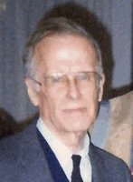 -
Ні́клаус Вірт
Ні́клаус Вірт (нім. Niklaus Emil Wirth; *15 лютого 1934) — швейцарський програміст і теоретик програмування, професор, автор мови програмування Паскаль, лауреат Тьюрингівської премії. Вірт є автором багатьох широко відомих праць з програмування. Він був директором Інституту інформатики Швейцарської вищої політехнічної школи до 1999. Докладніше...
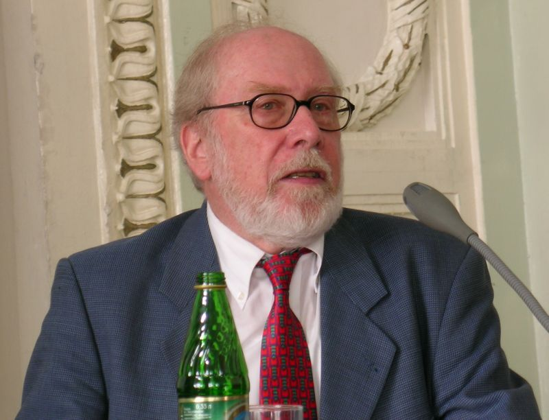 -
Рендалл Гайд
Рендалл Гайд (англ. Randall Hyde, народився у 1956)[1] відомий як автор книги Мистецтво асемблера (The Art of Assembly Language[2]), присвяченої програмуванню мовою асемблера. Він створив асемблер Lisa в кінці 1970-х і розробив мову програмування Високорівневий асемблер[en] (High-Level Assembler або HLA). Докладніше...
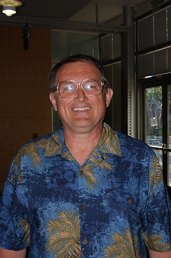 -
Андерс Гейлсберг
А́ндерс Ге́йлсберґ (англ., датс. Anders Hejlsberg) — данський програміст. Прославився роботою над декількома комерційно успішними мовами програмування та інструментарієм для розробки програмного забезпечення, серед яких: Turbo Pascal, Delphi, J++, C#, TypeScript та інше. Докладніше...
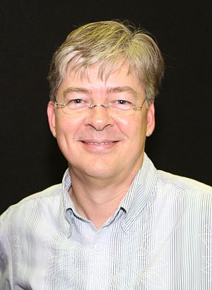 -
Жан Ішбіа
Жан Давид Ішбіа (фр. Jean David Ichbiah, 25 березня 1940 Париж — 26 січня 2007) — французький вчений-програміст, головний розробник мови програмування Ada. Докладніше...
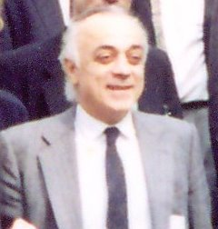 -
Браян Керніган
Браян Вілсон Керніган (англ. Brian Wilson Kernighan; січень 1942, Торонто, Онтаріо, Канада) — співавтор знаменитого керівництва «Мови програмування Сі» (спільно з автором мови Денісом Рітчі). Співавтор мов AWK, AMPL. Докладніше...
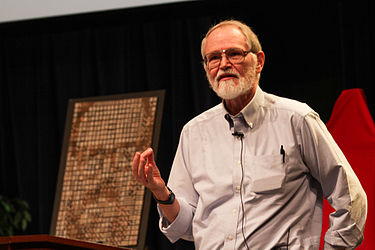 -
Расмус Лердорф
Расмус Лердорф (англ. Rasmus Lerdorf; 22 листопада 1968, Кекертарсуак, Гренландії) — данський програміст (нині живе в Канаді), який написав у 1994 році набір скриптів на Perl / CGI, що обробляють шаблони HTML-документів, пізніше втілився в мову програмування PHP, з допомогою якого можна було вирішувати різні завдання веб-додатків, включаючи нешаблонне створення сайтів для різних цілей і напрямів. Докладніше...
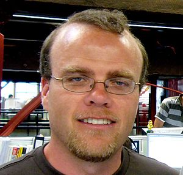 -
Денніс Рітчі
Денніс Мак-Алістер Рітчі (англ. Dennis MacAlistair Ritchie, 9 вересня 1941 — 12 жовтня 2011) — американський вчений-інформатик, відомий як розробник мови програмування C і впливом на інші мови програмування. Також він відомий як розробник операційних систем Multics і UNIX. Нагороджений премією Тюрінга у 1983 році і Національною медаллю технологій 1998 р. Докладніше...
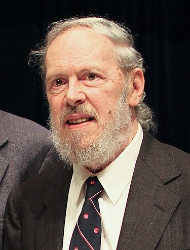 -
Гвідо ван Россум
Гві́до ван Ро́ссум (нід. Guido van Rossum, нар. 31 січня 1960[Джерело?]) — голландський програміст, відомий завдяки створенню популярної високорівневої мови програмування Python. Докладніше...
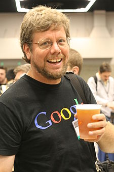 -
Б'ярн Страуструп
Б'ярн Страуструп, Б'ярнє Строуструп (дан. Bjarne Stroustrup вимова народився 11 червня 1950 (за іншими відомостями, 30 грудня)[2], Орхус, Данія) — автор мови програмування C++. Докладніше...

-
Томас Курц
Томас Курц (англ. Thomas Eugene Kurtz) — один із розробників сімейства високорівневих мов програмування BASIC (скорочення від англ. Beginner 's All-purpose Symbolic Instruction Code — універсальний код символічних інструкцій для початківців; англ. basic — основний,базовий). Докладніше...
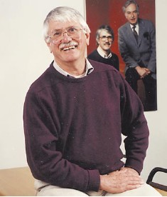 -
Катерина Ющенко
Катери́на Ло́гвинівна Ю́щенко (8 грудня 1919, Чигирин — 15 серпня 2001) — автор першої у світі мови програмування високого рівня («Адресної мови програмування»), науковець-кібернетик, доктор фізико-математичних наук, член-кореспондент АН УРСР (1976), заслужений діяч науки, дійсний член Міжнародної академії комп'ютерних наук Докладніше...
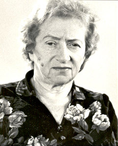